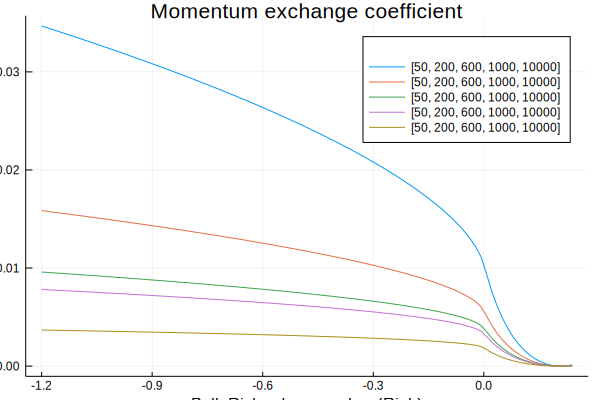
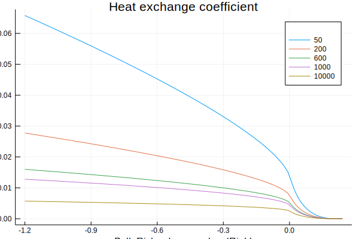
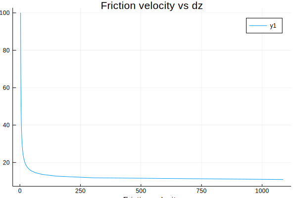

SurfaceFluxes
Surface flux functions, e.g. for buoyancy flux, friction velocity, and exchange coefficients.
Byun1990
Compute surface fluxes using the approach in Byun (1990).
Plots
using CLIMA.SurfaceFluxes.Byun1990
using Plots, LaTeXStrings
Ri_range = range(-1.2, stop=0.24, length=100)
scales = [50,200,600,1000,10_000]
z_0 = 1.0
γ_m, γ_h = 15.0, 9.0
β_m, β_h = 4.8, 7.8
Pr_0 = 0.74
plot(Ri_range,
[Byun1990.compute_exchange_coefficients(Ri,scale*z_0,z_0,γ_m,γ_h,β_m,β_h,Pr_0)[1]
for Ri in Ri_range, scale in scales],
xlabel="Bulk Richardson number (Ri_b)", ylabel="Drag coefficient", title="Momentum exchange coefficient",
labels=scales, legendtitle=L"z/z_0")/home/travis/.julia/packages/GR/KGODl/src/../deps/gr/bin/gksqt: error while loading shared libraries: libQt5Widgets.so.5: cannot open shared object file: No such file or directory
connect: Connection refused
GKS: can't connect to GKS socket application
Did you start 'gksqt'?
GKS: Open failed in routine OPEN_WS
GKS: GKS not in proper state. GKS must be either in the state WSOP or WSAC in routine ACTIVATE_WS
sh: 1: latex: not found
latex: failed to create a dvi file
sh: 1: latex: not found
latex: failed to create a dvi file
Recreation of Figure 4(a) from Byun (1990)
plot(Ri_range,
[Byun1990.compute_exchange_coefficients(Ri,scale*z_0,z_0,γ_m,γ_h,β_m,β_h,Pr_0)[2]
for Ri in Ri_range, scale in scales],
xlabel="Bulk Richardson number (Ri_b)", ylabel="Exchange coefficient", title="Heat exchange coefficient",
labels=scales, legendtitle=L"z/z_0")/home/travis/.julia/packages/GR/KGODl/src/../deps/gr/bin/gksqt: error while loading shared libraries: libQt5Widgets.so.5: cannot open shared object file: No such file or directory
connect: Connection refused
GKS: can't connect to GKS socket application
Did you start 'gksqt'?
GKS: Open failed in routine OPEN_WS
GKS: GKS not in proper state. GKS must be either in the state WSOP or WSAC in routine ACTIVATE_WS
sh: 1: latex: not found
latex: failed to create a dvi file
sh: 1: latex: not found
latex: failed to create a dvi file
Recreation of Figure 4(b) from Byun (1990)
Nishizawa2018
Plots
using CLIMA.SurfaceFluxes.Nishizawa2018
using Plots, LaTeXStrings
a = 4.7
θ = 350
z_0 = 10
u_ave = 10
flux = 1
Δz = range(10.0, stop=100.0, length=100)
Ψ_m_tol, tol_abs, iter_max = 1e-3, 1e-3, 10
u_star = Nishizawa2018.compute_friction_velocity.(
u_ave, θ, flux, Δz, z_0, a, Ψ_m_tol, tol_abs, iter_max)
plot(u_star, Δz, title = "Friction velocity vs dz", xlabel = "Friction velocity", ylabel = "dz")/home/travis/.julia/packages/GR/KGODl/src/../deps/gr/bin/gksqt: error while loading shared libraries: libQt5Widgets.so.5: cannot open shared object file: No such file or directory
connect: Connection refused
GKS: can't connect to GKS socket application
Did you start 'gksqt'?
GKS: Open failed in routine OPEN_WS
GKS: GKS not in proper state. GKS must be either in the state WSOP or WSAC in routine ACTIVATE_WS
API
CLIMA.SurfaceFluxes.compute_buoyancy_flux — Function.compute_buoyancy_flux(shf, lhf, T_b, qt_b, ql_b, qi_b, alpha0_0)Computes buoyancy flux given sensible heat flux shf, latent heat flux lhf, surface boundary temperature T_b, total specific humidity qt_b, liquid specific humidity ql_b, ice specific humidity qi_b and specific alpha0_0.
CLIMA.SurfaceFluxes.Byun1990.compute_MO_len — Function.compute_MO_len(u, flux)Computes the Monin-Obukhov length (Eq. 3 Ref. Byun1990)
compute_friction_velocity(u_ave, flux, z_0, z_1, β_m, γ_m, tol_abs, iter_max)Computes roots of friction velocity equation (Eq. 10 in Ref. Byun1990)
u_ave = u_* ( ln(z/z_0) - ψ_m(z/L, z_0/L) ) /κ Eq. 10 in Ref. Byun1990
compute_exchange_coefficients(Ri, z_b, z_0, γ_m, γ_h, β_m, β_h, Pr_0)Computes exchange transfer coefficients:
- C_D momentum exchange coefficient (Eq. 36)
- C_H thermodynamic exchange coefficient (Eq. 37)
- L_mo Monin-Obukhov length (re-arranged Eq. 3)
CLIMA.SurfaceFluxes.Nishizawa2018.compute_MO_len — Function.compute_MO_len(u, θ, flux)Computes Monin-Obukhov length. Eq. 3 Ref. Nishizawa2018
compute_friction_velocity(u_ave, θ, flux, Δz, z_0, a, Ψ_m_tol, tol_abs, iter_max)Computes friction velocity, in Eq. 12 in Ref. Nishizawa2018, by solving the non-linear equation:
u_ave = ustar/κ * ( ln(Δz/z_0) - Ψ_m(Δz/L) + z_0/Δz * Ψ_m(z_0/L) + R_z0 [ψ_m(z_0/L) - 1] )
where L is a non-linear function of ustar (see compute_MO_len).
compute_exchange_coefficients(z, F_m, F_h, a, u_star, θ, flux, Pr)Computes exchange transfer coefficients:
- K_D momentum exchange coefficient
- K_H thermodynamic exchange coefficient
- L_mo Monin-Obukhov length
References
Businger, Joost A., et al. "Flux-profile relationships in the atmospheric surface layer." Journal of the atmospheric Sciences 28.2 (1971): 181-189. doi: 10.1175/1520-0469(1971)028<0181:FPRITA>2.0.CO;2
Nishizawa, S., and Y. Kitamura. "A Surface Flux Scheme Based on the Monin-Obukhov Similarity for Finite Volume Models." Journal of Advances in Modeling Earth Systems 10.12 (2018): 3159-3175. doi: 10.1029/2018MS001534
Byun, Daewon W. "On the analytical solutions of flux-profile relationships for the atmospheric surface layer." Journal of Applied Meteorology 29.7 (1990): 652-657. doi: 10.1175/1520-0450(1990)029<0652:OTASOF>2.0.CO;2
Wyngaard, John C. "Modeling the planetary boundary layer-Extension to the stable case." Boundary-Layer Meteorology 9.4 (1975): 441-460. doi: 10.1007/BF00223393